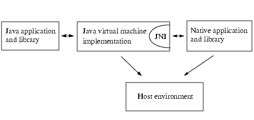

| Contents | Prev | Next | Index | The Java Native Interface Programmer's Guide and Specification |
The JavaTM Native Interface (JNI) is a powerful feature of the Java platform. Applications that use the JNI can incorporate native code written in programming languages such as C and C++, as well as code written in the Java programming language. The JNI allows programmers to take advantage of the power of the Java platform, without having to abandon their investments in legacy code. Because the JNI is a part of the Java platform, programmers can address interoperability issues once, and expect their solution to work with all implementations of the Java platform.
This book is both a programming guide and a reference manual for the JNI. The book consists of three parts:
This book tries to appeal to a wide audience with different needs for the JNI. The tutorial and programming guide are targeted toward beginning programmers, whereas experienced developers and JNI implementors may find the reference sections more useful. The majority of readers will likely be developers who use the JNI to write applications. The term "you" in this book will implicitly denote developers who program with the JNI, as opposed to JNI implementors or end-users of applications written using the JNI.
The book assumes that you have basic knowledge of the Java, C, and C++ programming languages. If not, you may refer to one of the many excellent books that are available: The JavaTM Programming Language, Second Edition, by Ken Arnold and James Gosling (Addison-Wesley, 1998), The C Programming Language, Second Edition, by Brian Kernighan and Dennis Ritchie (Prentice Hall, 1988), and The C++ Programming Language, Third Edition, by Bjarne Stroustrup (Addison-Wesley, 1997).
The remainder of this chapter introduces the background, role, and evolution of the JNI.
Because this book covers applications written in the Java programming language as well as in native (C, C++, etc.) programming languages, let us first clarify the exact scope of the programming environments for these languages.
The Java platform is a programming environment consisting of the Java virtual machine (VM) and the Java Application Programming Interface (API).1 Java applications are written in the Java programming language, and compiled into a machine-independent binary class format. A class can be executed on any Java virtual machine implementation. The Java API consists of a set of predefined classes. Any implementation of the Java platform is guaranteed to support the Java programming language, virtual machine, and API.
The term host environment represents the host operating system, a set of native libraries, and the CPU instruction set. Native applications are written in native programming languages such as C and C++, compiled into host-specific binary code, and linked with native libraries. Native applications and native libraries are typically dependent on a particular host environment. A C application built for one operating system, for example, typically does not work on other operating systems.
Java platforms are commonly deployed on top of a host environment. For example, the Java Runtime Environment (JRE) is a Sun product that supports the Java platform on existing operating systems such as Solaris and Windows. The Java platform offers a set of features that applications can rely on independent of the underlying host environment.
When the Java platform is deployed on top of host environments, it may become desirable or necessary to allow Java applications to work closely with native code written in other languages. Programmers have begun to adopt the Java platform to build applications that were traditionally written in C and C++. Because of the existing investment in legacy code, however, Java applications will coexist with C and C++ code for many years to come.
The JNI is a powerful feature that allows you to take advantage of the Java platform, but still utilize code written in other languages. As a part of the Java virtual machine implementation, the JNI is a two-way interface that allows Java applications to invoke native code and vice versa. Figure 1.1 illustrates the role of the JNI.
Figure 1.1 Role of the JNI
The JNI is designed to handle situations where you need to combine Java applications with native code. As a two-way interface, the JNI can support two types of native code: native libraries and native applications.
Remember that once an application uses the JNI, it risks losing two benefits of the Java platform.
First, Java applications that depend on the JNI can no longer readily run on multiple host environments. Even though the part of an application written in the Java programming language is portable to multiple host environments, it will be necessary to recompile the part of the application written in native programming languages.
Second, while the Java programming language is type-safe and secure, native languages such as C or C++ are not. As a result, you must use extra care when writing applications using the JNI. A misbehaving native method can corrupt the entire application. For this reason Java applications are subject to security checks before invoking JNI features.
As a general rule, you should architect the application so that native methods are defined in as few classes as possible. This entails a cleaner isolation between native code and the rest of the application.
Before you embark on a project using the JNI, it is worth taking a step back to investigate whether there are alternative solutions that are more appropriate. As mentioned in the last section, applications that use the JNI have inherent disadvantages when compared with applications written strictly in the Java programming language. For example, you lose the type-safety guarantee of the Java programming language.
A number of alternative approaches also allow Java applications to interoperate with code written in other languages. For example:
A common characteristic of these alternative solutions is that the Java application and native code reside in different processes (and in some cases on different machines). Process separation offers an important benefit. The address space protection supported by processes enables a high degree of fault isolation--a crashed native application does not immediately terminate the Java application with which it communicates over TCP/IP.
Sometimes, however, you may find it necessary for a Java application to communicate with native code that resides in the same process. This is when the JNI becomes useful. Consider, for example, the following scenarios:
In summary, use the JNI if your Java application must interoperate with native code that resides in the same process.
The need for Java applications to interoperate with native code has been recognized since the very early days of the Java platform. The first release of the Java platform, Java Development Kit (JDKTM) release 1.0, included a native method interface that allowed Java applications to call functions written in other languages such as C and C++. Many third-party applications, as well as the implementation of the Java class libraries (including, for example, java.lang, java.io, and java.net), relied on the native method interface to access the features in the underlying host environment.
Unfortunately, the native method interface in JDK release 1.0 had two major problems:
The JNI was designed to overcome these problems. It is an interface that can be supported by all Java virtual machine implementations on a wide variety of host environments. With the JNI:
The JNI was first supported in JDK release 1.1. Internally, however, JDK release 1.1 still uses old-style native methods (as in JDK release 1.0) to implement the Java APIs. This is no longer the case in Java 2 SDK release 1.2 (formerly known as JDK release 1.2). Native methods have been rewritten so that they conform to the JNI standard.
The JNI is the native interface supported by all Java virtual machine implementations. From JDK release 1.1 on, you should program to the JNI. The old-style native method interface is still supported in Java 2 SDK release 1.2, but will not (and cannot) be supported in advanced Java virtual machine implementations in the future.
Java 2 SDK release 1.2 contains a number of JNI enhancements. The enhancements are backward compatible. All future evolutions of JNI will maintain complete binary compatibility.
This book contains numerous example programs that demonstrate JNI features. The example programs typically consist of multiple code segments written in the Java programming language as well as C or C++ native code. Sometimes the native code refers to host-specific features in Solaris and Win32. We also show how to build JNI programs using the command line tools (such as javah) shipped with JDK and Java 2 SDK releases.
Keep in mind that the use of the JNI is not limited to specific host environments or specific application development tools. The book focuses on writing the code, not on the tools used to build and run the code. The command line tools bundled with JDK and Java 2 SDK releases are rather primitive. Third-party tools may offer an improved way to build applications that use the JNI. We encourage you to consult the JNI-related documentation bundled with the development tools of your choice.
You can download the source code of the examples in this book, as well as the latest updates to this book, from the following web address:
http://java.sun.com/docs/books/jni/
| Contents | Prev | Next | Index | The Java Native Interface Programmer's Guide and Specification |
Copyright © 2002 Sun Microsystems, Inc.
All rights reserved
Please send any comments or corrections to jni@java.sun.com